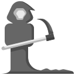

A minimal, dark download page for reaperV1. Grab the Windows executable and run it locally on your machine.
Only download and run executables you trust. Windows may show a security warning for unsigned applications.